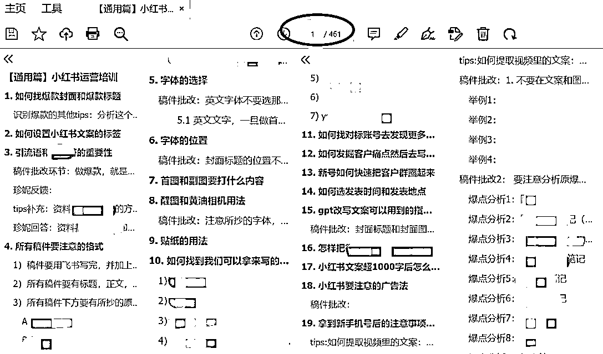
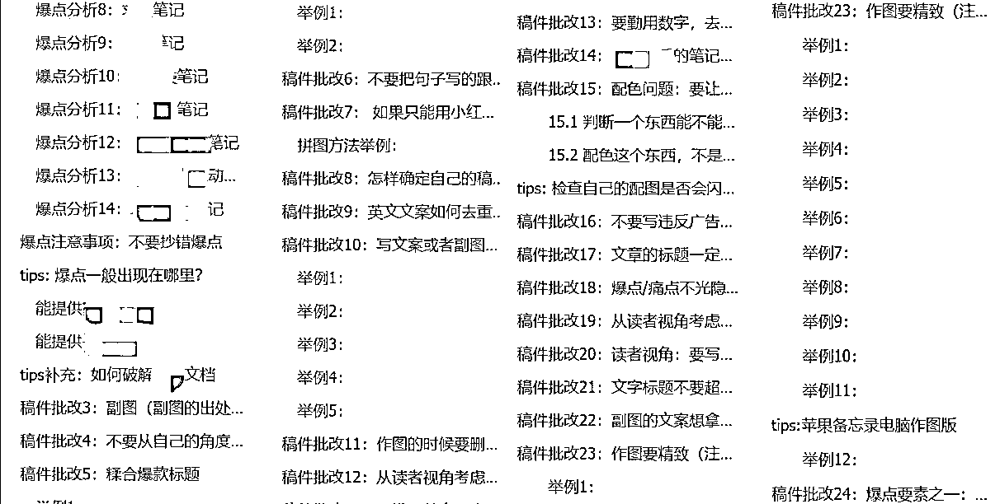
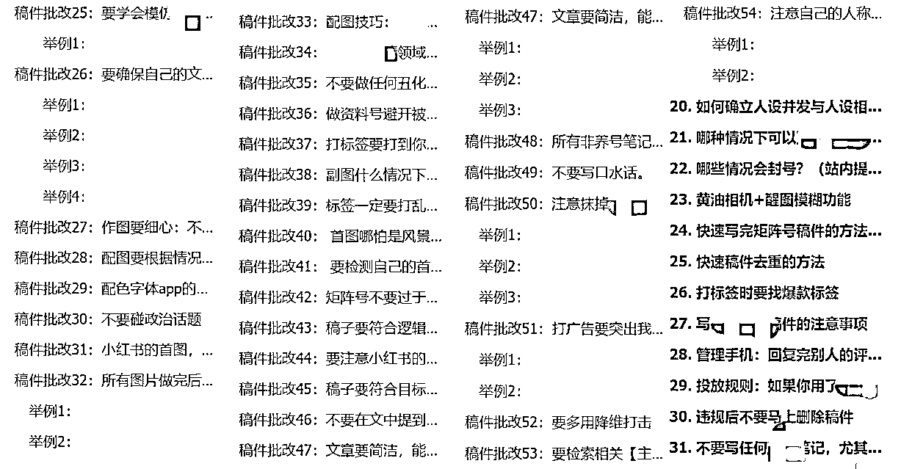
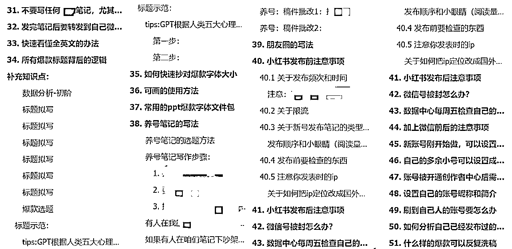
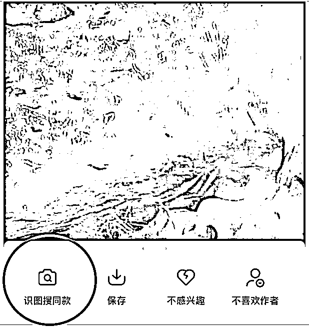
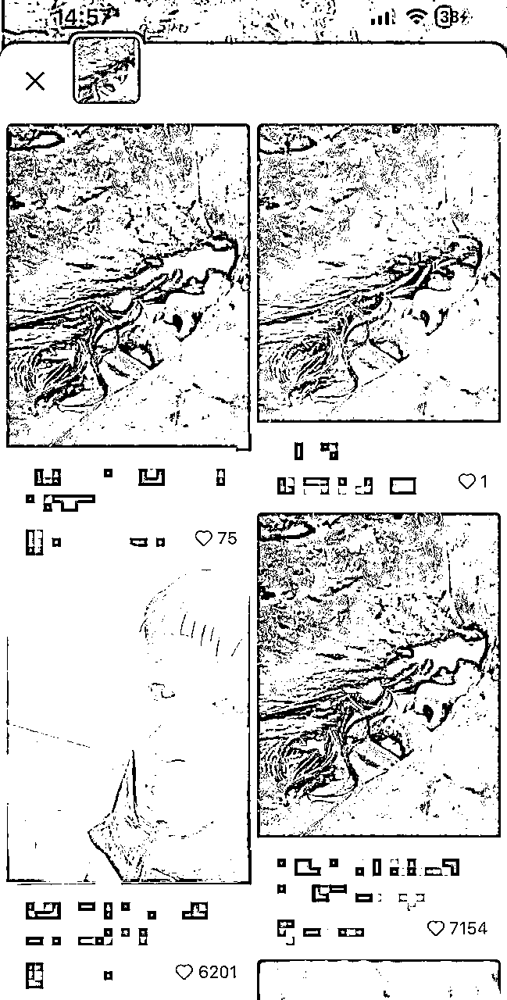
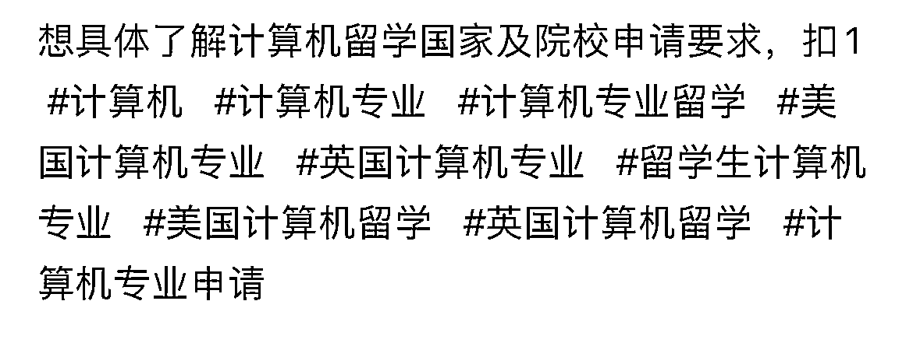
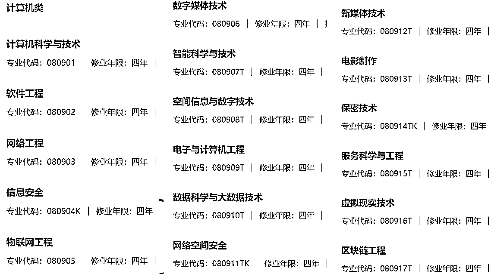

来源：https://ht16ej1tui.feishu.cn/docx/XNE6dvDVLoFx0dxnrFScxOvsnOb
2023年是不太平的一年，Ivy和我陆续生病，一个生病半年，一个生病两个月，核心员工意外怀孕，我们不得不临时招人继续培训。
考虑到同一用户群体有多重需求，我们开始业务多元化，向外合作，但又踩了很多坑，虽然没有亏多少钱，却耽误了非常多的精力，变相亏损几十万。
这是Ivy和我之前写过的复盘笔记，感兴趣的圈友可以戳戳。
复盘1：https://t.zsxq.com/16tvEOFgZ 「粉丝3000月营收20万，小红书低粉高变现的蓝海攻略分享」
复盘2：https://t.zsxq.com/16RnIxsp7「小红书教育赛道GMV1600万/年，小团队创业心法」
赶上小红书要求矩阵商家全部蓝v，充值聚光投放，但Ivy和我还是做出了年1100w的营收。
此文写给各位老板，以及想分析自己团队运营出错在哪的运营操盘手。
希望能让老板们避开被人割韭菜，避开不靠谱的项目，避开不合适的人。在24年多多发财，做大做强！
下方为「姐妹花陆续生病，产后创业被坑-坎坷真人故事版」的前言。
如需跳过故事，也可戳下方高亮块的「太长不看版」直接看正文：
23年1月，孩子出生那天我一边给ivy打字直播生孩体验，一边在生完1小时后掏起手机回工作消息，顺产当天，轻度撕裂，下地行走。
除了中间40分钟痛得我没法拿起手机，其他时间我都在工作群体验公司爆单的快乐&身体时不时的阵痛。家人恰好赶上生产前一天的下午，要出差签合同。
我半夜痛到自查百度，发现小孩要提前出生了，独自一人紧急之下拨打120，拿起早就收拾好的待产包，往棉袄里塞了点零食，在家等120急救人员上门。
那时候产房的产妇要么阳了要么阳过了，其他产妇痛的大叫，虽然我也痛，但想了下：“家人赶到的时候估计都早上八九点了，我还是不叫了，省点力气用来生孩，万一要顺转剖，还不知道啥时候能回复工作消息，还是赶紧检查自己有没有工作没和Ivy交接好吧。”
于是在医生一边按我肚子一边问我“你不痛吗”的时候，回复医生“也痛，可能你按我那会，没有那么痛”。
提前请的月嫂阳了，于是我家开始自己带孩，赶上孩子二月闹，我总是要等到下午和晚上才能陆续处理工作信息，竞争对手在那阵子经常举报我司矩阵号，怎么抓也抓不到人。
阳完后的Ivy，怕耽误我产后恢复，独自一人承担了这些压力，最后在三四月的时候生了一场半年多的病，开始一躺下就心脏砰通砰通跳，每天睡眠只有几小时。
三月后我开始在正常时间段处理工作，部分业务业绩下滑，公司陆续经历了个别人员离职、核心人员怀孕，小红书开始要求全部蓝V，开聚光。
我在招聘，选人，培训人的过程中也得了一场两个月的病，病到医生一看到我就说：“怎么打点滴的又是你。”
再后来，考虑到客户群有多重需求，我开始寻求向外合作，由于一直以来被Ivy保护得很好，从不需要处理对外合作事宜，最后我踩了不少坑。
那时候Ivy劝我：“不要和这人合作”，我不听，觉得“你生病了，有些东西你没接触，你的决策不一定对”。
Ivy劝不过我，只好让我去尝试，最后果然让我们变相亏了钱，南墙撞得我头破血流，含泪抱住Ivy“你是对的”，自此确立了Ivy在公司的做决策地位，现在涉及到战略决策，我都先问问她，她觉得有问题，如果我的意见没法说服她，我就听她的。
整个2023年，公司内部有人员流动，Ivy和我在生病处理工作和利益过程中，爆发过矛盾，我俩一起创业的过程，又一块曾遭人背叛，被合作伙伴坑，最后我们还是做出了年1100w的营收，并把所有事情处理好，继续稳步向前。
今天我要写的内容，分为三个版块，分别针对：
运营人员、外部合作伙伴、内部合伙人，
如果这些内容能给各位老板提供一些帮助，那实在是——泰裤辣！
团队想赚钱，离不开运营团队的引流能力，
珍妮从0开始搭建出1600w+gmv/年的9人运营小团队，
在招聘，培训员工的路上踩过大大小小的坑，
最后完成了共计461页，51章的通用版赛道：运营培训指南，




本次珍妮将选取其中重要章节，与大家分享：
「13个角度：辨别一个人的真假运营能力」
这是珍妮从未公开发过的识人干货，
无论是什么等级、什么赛道的运营操盘手，只要用这个方法，就能识别出，他——是不是老板们要的人。
知道这13个角度的老板，都悄悄发了大财，
如果不想被竞争对手抢走优秀的运营，那就快快来看吧
以下数据仅针对矩阵号，不针对个人ip。
对于红海赛道：23年6月开始，小红书陆续要求商家要持有资质，注册蓝V。此外，从23年7-9月，小红书逐步推动聚光业务，要求商家要投放才能发出联系方式。这一切导致大量商家开始付费，小红书逐渐减少了硬广笔记&重复度相似的干货笔记的自然流量。
所以，红海赛道的产品，如果能在23年9月及之后依旧能靠硬广拿到50+人在下方“咨询”，能靠干货拿到上百个点赞收藏，就是不错的运营数据。
但大部分红海赛道的产品，在23年9月后，只能做到3-20人在下方“咨询”，发出去的干货千篇一律，小眼睛低于500。甚至有些产品，除了水军，没有任何人在下方咨询。
对于蓝海赛道，无论是否过了23年9月，只要依旧有上百个人在硬广下方“礼貌问价”，就是好的运营数据。
如果一个人给你晒出的业绩，都是23年6月之前的数据，而23年6月甚至9月后没有特别好的数据，说明他更多的是在赚：“时代给他的钱”，而不是靠运营能力赚到的钱。
在看到别人的爆款图后，长按首图，识别找同款，看同样的首图，有多少同行在用，对方的点赞藏以及下方礼貌问价的人有多少。


举例，上方的表情包模板在教育赛道非常常见，但教育赛道也分上下游，小到小初高，大到考研留学读博，并且伴随各种语言考试、证书考试、学科竞赛等，都几乎在用类似的表情包。
如果你面试的运营人员主页都几乎是表情包，一定要检索下同款，看看他所在的赛道目前的点赞藏数据。
如果他所在的赛道在23年9月直至现在，用同款表情包都能数据很好，说明那是蓝海赛道，属于时代给运营人员送钱了，但不能确定是不是运营人员足够有能力，还需要做下一步的判断。
如果他所在的赛道在23年9月直至现在，用同款表情包数据很差，说明是红海赛道，这时候如果运营人员有个别点赞藏评论异常突出的笔记，就说明运营人员的能力不一般。
如果你的同行都在用同样的图，点赞藏却很差，而你面试的运营人员也依旧在用同样的图，说明这个运营人员并没有自己的创意。
好的标签，是针对目标客户人群打标签，而不是针对笔记里写了什么去打标签。
以留学行业为例，很多人打标签会打“留学”“英国留学”等标签，有些做计算机留学的运营，会把笔记标签打成如下图。

但实际上，他们没有考虑过：不是只有计算机专业的人才会去搜：“计算机留学”。计算机是一个大的类别，所有这个类别的人都可能被小红书推送“计算机留学”相关笔记。
以我搜“计算机相关专业包括哪些专业”为例，相关的专业就有：

由此可见：不是只有「计算机科学与技术专业」的人会被推送“计算机留学”笔记，“软件工程”、“信息安全”专业的人，也会被推送相关笔记。
所以在打标签时，可以问问销售端的人：“最近申请计算机硕士的人一般本科是什么专业？”
然后在标签上打上对应的专业，而不是自嗨，换着花样打上一大片的“计算机留学”“计算机专业留学”的字样。
不要只看他的小眼睛阅读总数。一篇好的笔记，如果是主打搜索流量，那么往往一开始的数据曝光量没有那么好，但阅读量会随着时间的推长而增长，
如果是主打“首页推荐”流量，那么发布7天内阅读数量会有一个大爆发，并且在7天后仍会持续给你带来评论。
如果一篇笔记，搜索流量和首页推荐都不行，多半会在发表当天达到一个值后，热度就彻底降下去或缓缓降下去。
好的运营，阅读曲线一定是持续增长而不是下滑。老板不要只看到对方那人均几百或者几千的小眼睛数据就觉得这笔记不错，而是要去看单篇笔记的阅读曲线。
现场改写标题可以体现一个人的即兴运营能力，而且能看出：他是否擅长在笔记里埋藏搜索关键词；他埋藏的关键词是否符合用户搜索习惯；他是否擅长通过标题和图片，增大笔记上首页推荐的可能性。
举例：我们安排运营现场写笔记，他一共找了3个标题/文案准备模仿，
大一大二同学现在只干一件事：投低年级项目（点赞117，收藏90，评论55）
美国大一 | 通过低年级项目拿到了投行fast（点赞103，收藏83，评论46）
除了高盛！🇺🇸开了这么多大一大二prog（点赞5，评论收藏0）
他最后改写的文字标题是：
US大一大二留子！就投低年级项目❗
而他选择的首图，则是
爆款里常见的一张国外风景建筑图
这个文字标题不能算好，首先，他模仿了“除了高盛！🇺🇸开了这么多大一大二prog（点赞5，评论收藏0）”的“US”这个词。
可是，我们的目标用户（留学生）虽然喜欢中英混用，但在小红书搜索时，还是更喜欢搜“美国”，而不是“US”。说明这个运营人员对用户的搜索习惯不够了解。
其次，“就投低年级项目❗”远远没有“现在只干一件事”这句话带来的宣传色彩强烈。
如果他把文字标题改成：
美国实习！大一大二都给我只干这一件事！
图片上P字，改成：
低年级实习项目，没病的别来！
再在图片上打上小标题，“美区留子”
也许效果就大不一样。
因为：“美国实习”几个字，符合用户的搜索习惯，“大一大二”体现了“目标人群”“都给我只干这一件事”，用“都、只、一件”来起到强调作用。
至于为什么不在文字标题里提到“低年级项目”，
一是因为：我已经在图片标题里提到它，
二是因为：需要实习的美国留学生会优先搜“美国实习”，而不是搜“低年级项目”。
所以文字标题就像一个谜语，只要嵌入了搜索关键词是什么就行。至于谜底，由戳进去后的正文笔记来回答。
注意：就连图片标题，我也只是强调“低年级实习”，并打上“没病的别来”就是为了和同行的实习广告形成反差，吸引那些想实习，但在犹豫的人点进来看。
关于「如何修改标题和封面，让自己的投放精准10倍」的方法，我还有一些小技巧，以后会慢慢提到。
一般我会把笔记归为以下三类：
（比如晒帅哥美女图、吃喝玩乐攻略、搞笑段子有关的笔记）
其中：晒帅哥美女图，是提供观赏价值，这本就是情绪价值的一种。
吃喝玩乐、搞笑段子，都是让用户从精神上觉得愉悦，也是一种情绪价值。
如果你只提供情绪价值却不打广告，你的笔记有上千上万阅读量是非常正常的，阅读量只有几百才是不正常。因为你已经拿你可能得到的钱，去换到了被客户点赞藏后、所认可的“情绪价值”
（比如各种保姆级攻略、实操级攻略）
这类干货在各个赛道都有，根据赛道是红海/蓝海，而呈现出几百到几万的阅读量。如果赛道太过红海，阅读量会低于300，甚至只有几十。
（比如各类不掺任何水分的硬广）
这类笔记由于是没有感情的硬广机器人，在没有投放的情况下，红海赛道的阅读量一般低于200，甚至只有几十。
写得好的硬广，多半会调动客户的情绪，顺带提供实用价值，让硬广在没有投放的情况下就有破万的阅读量。除了推销，任何价值都没提供，却还指望用户要看完自己的笔记并且给自己一键三连，在我看来是“向用户索取情绪价值”。
这三类笔记，
从涨粉涨权重的情况来看，
数据是：
向用户提供情绪价值＞干货价值＞向用户索取情绪价值
从带来利润的情况来看，
数据是：
夹杂情绪价值和实用价值的硬广＞夹杂情绪价值的硬广＞夹杂干货价值的硬广＞情价&干货0价值的硬广。
至于纯粹提供情绪价值或者干货价值的笔记，除非是接了广告，或者引流到私域用其他产品变现，否则光靠小红书没有办法带来利润。（个人ip除外）
如果你面试的运营，他展示给你的往期作品几乎都是纯提供情绪价值或者干货价值的笔记，但又并没有真的打过什么广告/带过什么货，说明他给企业带来的利润很少。
他提到的往期变现业绩，也许不是由他做起来的，而是由团队里的其他人做起来的。
举个例子，我在雅思界看过一篇笔记，标题是：
脑子一热去学了雅思，没想到被财神爷看中了…
正文（正文已被原作者删除，但当时我复制了他的全文，此处为保护原作者隐私，我只摘取部分段落）：
不是英专生，英语基础一般，因为想挑战自己，就去考了雅思，好在功夫不负有心人成功拿到了8.0啦🎉🎉！！
很多人都不太清楚拿到证书有什么好处🧐，现在汤圆可以告诉大家，它是认识这个世界的第一张门票🎫同时也能够实现了经济独立。有了雅思证书，不仅能够做家教老师，教英语🙆🏻♀️，同时也是去外企的一块敲门砖🧱
鼓励大家学雅思，更多地是鼓励大家按照雅思模式练习英语。经济条件允许可以参加考试，争取一次考个6.5以上，做点兼职把报名费赚回来。
之前备考用过的雅思物料📚现在都用不上了，就继承给姐妹吧，不要💰～
包括🈶：
blablabla
这篇笔记在2天内涨了将近4000粉，下面一大堆真实用户评论他。
可这样的笔记除了涨粉，用处不大，因为下方评论他的人，我几乎都戳进主页看了用户画像，中年宝妈居多，都想靠学雅思去做家教来赚钱。
我不清楚运营人员分享这个雅思资料的目的，但如果是为了转化别人去学雅思，那么基本只可能报线上大班课，实体课那种500-1000/小时的课程，是上不起的。
而这群吸引来的客户，如果你想后续把他们继续转化送去留学，也完全不可能赚到这波钱。
除非是想把宝妈吸引过来，送去兼职平台做兼职，也许可以小赚一笔。
但我们还是可以从这个标题中学到很多，比如做mbti，盖洛普的家人们，可以把盖洛普和钱联系起来。毕竟ivy和我是靠测盖洛普，发现彼此性格互补，才创业成功的。
修改标题如下：
脑子一热去学了盖洛普，没想到被财神爷看中了...
脑子一热去学了盖洛普，我的业绩狂涨10万！
（这里没有提到：“我是谁”，主要是为了同时兼顾小红书的个体和老板人群。如果写成“我司”就得确保账号瞄准的是老板，如果写成“我”，就更多可能瞄准“个体”。至于没有写成“薪资”，是因为暂不确定该账号定位瞄准的是谁，如果瞄准工作党，那就写成“薪资/工资”，如果瞄准老板，就写成“我司利润”。
但以上不算特别好的标题，原因就是标题里的“盖洛普”三个字。
因为盖洛普是一个还没被广泛提及的概念，标题里植入“盖洛普”只能吸引到本就对盖洛普感兴趣的人。如果真想在小红书打通盖洛普市场，要从其他另外两个角度植入关键词。（此处保密。）
如果你用灰豚数据去按评论数量高低查看最火的笔记，你有可能遇上水军。
有的笔记，发布时间/编辑时间是23年1月22日，他的评论区的人也集中在1月22-23评论，到了24之后就一个评论都没有，多半是水军，不信可以戳评论区的主页看看。
因为任何一篇真实的爆款，他的评论数量都是增长的，评论时间都是断断续续的，不会恰好卡在某几天。
如果你面试的运营人员，他把这种只有水军的爆款拿出来抄，说明他还没有踏入运营这张门的门槛。
有阵子我刷到一个盖洛普软广，文字标题大概是：“和内卷的男朋友谈恋爱，觉得自己是个废物”。笔记点进去后，开始介绍盖洛普优势。这样的选题，是很难把想买盖洛普解读或者私教的人吸引过来的。具体原因是：这个做运营的人，没有先弄懂：“买单的客户，是因为什么场景而被盖洛普吸引”。
举个例子，Ivy和我买盖洛普，是因为Ivy买了刘润的星球，在里面被安利了盖洛普，Ivy拿到叶叶训练营第一名的奖励后，把盖洛普推给了我和我们另一个朋友，我推给我老公和我其他朋友。可是真正买了盖洛普解读的人，只有Ivy，我，以及某个朋友。其他人全部种草失败。
种草成功的人都有同一类共性：想当老板/副业已经做成功了/极度渴望升职加薪/想在管理层把事情做的特别好/已经是老板。
而那些副业没做成功/不想当老板/对升职加薪有点渴望又没那么渴望/不在管理层的人，都对盖洛普不感兴趣或者最多弄个免费版的5个优势解锁。
此外，这群种草成功的人还都符合另一条共性，在此不便透露。
我和Ivy说：如果我有情感困扰，我会找情感博主，而且我绝对不会去搜索“和内卷男友谈恋爱觉得自己是个废物我该怎么办”的话题。即使小红书首页推荐给我推了相关话题，我就算点进去，也不会被盖洛普种草，因为这一切与我无关。
而这个做运营的人，她之所以写出类似的文字标题，就是因为她只从自己的角度去思考了事情，却没有问过商家：来买单盖洛普的人，用户画像是怎样的？他们是通过什么途径了解的盖洛普？
一个选题，就足以辨别：这个运营人员，是否靠谱。
除此以外，还有4个维度可用于分析运营的真实能力。
我会在2-3月推出完整版的老板识人手册：「13个角度」辨别一个人的真假运营能力.pdf
并且完善矩阵号运营手册，包括：
1.怎样在养号初期就知道这个号是个死号？再怎么养也没用？
2.真的需要养号才能让笔记数据更好吗？
3.怎样快速鉴别哪些爆款可以抄，哪些不可以？
4.怎样糅合爆款，既不抄袭又出爆款？
4.零门槛学会：扒国内国外素材的快速方法
5.怎样分析隐藏爆点，让员工篇篇都抄出爆款？
6.运营端哪些问题被忽略，会导致自己少赚百万？
7.矩阵号怎样让客户只在你这里买，而不是买别人？
8.怎样提高洗稿效率，从新人2小时/篇降到10分钟/篇？
创业路上会遇到很多合作商，有的是你主动求来的，有的是你被动遇到的。合作的路上不仅有钱，还有坑。以下是Ivy和我创业成功，踩过大小坑后的经验，希望对大家有所帮助。
比如先去小红书检索相关项目，看看下方评论区礼貌问价的人多不多，是不是水军。检索小红书的爆款，看这个市场是红海还是蓝海。再来判别：市场需求是大/小？赛道拥挤还是比较舒适？
有些业务利润非常大，合作商会把话说的很好听，也很舍得分利润。但如果你多方打听，遇到懂行的人，他会告诉你：这类项目就是坑学生钱的，爆雷可能性很大，最后可能给学生的人生埋上污点。
这一点Ivy总是很谨慎，在我们可能消耗学生信任度之前，就及时和上前找我们的合作方说了拜拜。不要做缺德的事，因为这些坏事做多了，会在有一天，变成回旋镖，砸在你或者你家人的身上。
我有时候会看商界故事，曾听说过一个商人坏事干尽，最后孩子长大发现是个智障儿的故事。很难说，这是不是很多年前种下的恶果。
这点我踩过大坑，因为线下见过面，觉得合作方很真诚，确实不错，利润也大，就开始了合作。但有时候，一个老板，他如果很真诚，也许他只适合做销售，不适合做交付。你和他相处，觉得：这人真不错，人也坦荡没有歪心思。
等待交付的时候，才发现：这哥们根本不懂交付，手里那个负责做交付管理的主管也不咋滴，最后还需要你来擦屁股，还消耗你的客户对你的信任。
有的合作方，他们销售回复客户的语气非常冷淡或者不及时或者不专业，但他们不会说是自己签单不了这个客户，只会说是客户没买单。但如果你泡在对方销售群，你就知道：是合作方的问题/客户的问题/我们自己的问题？然后挨个解决问题。
该提出建议的地方，要提出建议，除非你不想再和这人合作。
该调整引流策略的地方，要及时调整，除非你不想再赚钱。
有些话，是万万不能在有员工的群里提的，有些话，是绝对不能对客户说的。但有些合作方会在说错话后，和你说：“我群太多啦，记不住群名”甚至会来找你理论“是这个客户傻逼”然后推卸责任。
哪怕你多次私聊他，下次他还会犯同样的错误。这样的合作方，不要合作。一个记不住合作需求、不尊重客户的人，一不留神就能把你往死里坑。
自媒体业务一般分为运营（引流）、销售（成交）、交付（包括售后）三大版块，懂运营的，不一定懂销售。懂销售的，不一定能操心交付。懂交付的，让他对外打交道或者做运营，又可能得罪客户。
情商高很真诚的人，容易让客户签单，但如果他背后没有靠谱的交付团队，就会引起客诉，最后把真诚这张牌打成一手烂牌。
只懂运营的人，如果没有合适的销售团队，就没法签单。如果没有销售团队给的签单反馈，运营方就没法调整自己的运营方案，让更多客户前来咨询。
只懂交付的人，因为不懂客户的潜在需求，或者缺乏与人打交道的能力，会闹出很多人际交往笑话，使得合作方不愿与之合作。
如果你遇到一个又懂运营、又懂销售、又懂交付的人，那一定是你付不起的价格。他要么已经不需要与你合作，要么你得出高价。
与人合作，要判别他们团队里：运营、销售、交付，是不是都是正确的人，是不是把人摆在了合适的位置上。
如果一个团队里，负责运营的人天天向外打交道，做销售的想来学运营，负责交付的说要学做自媒体，说明大家位置没坐对，没有时间去打磨自己擅长的事情，和他们合作，迟早要散伙。
一般来说，这三类人有以下特点：
做运营的：比较注重手里的事情，观察客户的需求，不喜欢和合作方打交道。
做销售的：会在销售群跟进进度条，擅长对外社交，不喜欢操心交付的琐碎细节。
做交付的：在交付端盯紧服务质量，及时发来客户的好评，不爱和合作方打交道，写出来的引流文章吸引不到对的人。
家庭不稳定，恋情不稳定的人，可能因为一个不高兴就撂摊子，最后你来收拾烂摊子背锅。
情绪不稳定的人，容易出口伤人，说撂摊子就撂摊子，最后由你擦屁股。
一旦有人第一次撂摊子，他一定会撂很多次摊子，所以要在他撂第一次摊子时就终止合作，因为真正靠谱的人，是从头到尾都靠谱，都足够稳定。只有不够靠谱的人，才会期末成绩一下子70分，一下子90分。
Ivy和我天生性格不一样，即使两个人都有事业心，但她结婚的时候，我去她家当伴娘，她婆婆都很纳闷：我和另外一个伴娘，是怎么和Ivy成为朋友的。因为我们和Ivy的性格恰好一南一北。
但合伙的关键，正是，要性格互补。
21年初，我两还没一起创业时，测过盖洛普，我的盖洛普版图里毫无战略能力。Ivy却四项版图全部具备。最后我俩搭档创业，让Ivy来当军师。还真就创成了。
Ivy擅长站在大方向上给公司业务布局，而我却完全不能。在执行这件事情上，她擅长观察销售在群里的话术动作，和合作商谈判，帮我们拿到更高的利益，并把公司账单算得很清楚，还能精确算出合作方欠我们的钱，让看到数字就头疼的我，从来不需要担心我们会亏本。
因为一旦出现亏本，无论是真金白银的亏本还是精力上的亏本，Ivy的脑袋里就像有自动账单检测系统，快速算出ROI不对劲，带我及时调整策略。
到了检查员工写稿动作这一步，就由我来把关。因为任何一个不需要把关稿件的员工，多半都会跳槽。又或者底薪太高，我们覆盖不了。所以我们员工的稿件，一直都会有断断续续的差错。每次笔记发布前，都需要严格审核。
员工学历从大专到硕士，稿件要修改的幅度也每次都不一样。这些东西如果由Ivy来看，会触发她的头痛系统，“觉得为什么这么简单的事有人做不明白”。如果由我来看，会效率更高，因为我脑袋里的装置是：“从学习到实践，会有很多岔子，做不明白，才是常事”。
Ivy和我爆发最激烈矛盾的时候，恰恰是她生病痊愈后。而矛盾的种子，是在我俩生病的时候种下的。她说：“我不知道挣钱有什么意义，钱无法给我带来快乐，我也不知道公司现在有什么需要我做的，一切都在正常运转”。
那阵子恰逢业绩下滑，员工私聊找我倾诉，我听到ivy的话后很难过，虽然在她生病的时候没有指出来，却有怨气，并且散发负能量不自知，让Ivy也很难受。后来我俩探讨，才发现两人对世界的想法完全不一样。
在她眼里：“我辛苦打拼当上老板，就是为了有“想不工作就不工作”的权利，赚钱是每个人自己的事情，如果公司业绩不好，员工应该想办法优化，向市场要钱，而不是向老板要钱。”
在我眼里“你都当上老板了，你身上扛的就是责任。如果你因为不快乐而不工作，我就要为你的不快乐买单，员工也要因为你的不快乐买单。老板没有不快乐就可以不工作的权利，站在了这个位置，就要承担责任。”
我俩很惊讶对方竟然会有这样的想法。因为我们从高中开始就是闺蜜，高中大学连逃课都要一起逃的那种，看似已经很懂对方，却在合伙创业两年多后才发现：哇塞原来我们看待事情的角度竟然区别这么大。
最后，Ivy痊愈，她觉得工作的意义是因为可以带来成就感，于是我们又开始愉快的搞钱。
很难说前面的那两种想法到底哪种是对的，前者可以让一个人过得更快乐，同时因为给了员工更高的待遇，所以并不需要对人抱有歉意。后者似乎更有责任感，却更像老板自己道德绑架自己，逼着自己一定要带员工过上更好的日子，可是赚钱这个事情，每个人有自己的命数。
在那之后，如果我俩再遇到矛盾，就学会了把自己视角看到的东西主动说出来，然后去理解对方的视角，以免因为信息差，而彼此相爱相杀。
其实三观这种东西，哪有那么重要呢？只要能让公司过上好日子，让大家越过越好，不做危害社会的事情，那三观上的矛盾，就是最不重要，都不需要变成矛盾的小事。很多时候合伙人之间以为的矛盾，其实是三观上的不同而已，并不是什么真的大事。
Ivy是一个特别重视自己生活隐私的人，要是有人泄露了她的隐私，等同于在她雷区蹦迪。
我是一个特别反感别人工作态度不到位，工作成果不到位的人。如果有人工作态度不好，交付好，等于在我雷区蹦迪。如果态度好，交付不好，等于这个人从此不再合作。如果态度不好，交付不好，代表从来不会和对方成为朋友，更不会给对方工作机会。
我俩经常在发朋友圈上会有不同意见。如果我炫钱了，Ivy和我家人会集体劝我赶紧隐藏，叮嘱我要锦衣夜行。但有时候感觉连转账截图都不炫，别人也不知道我们干嘛的。所以我俩就在发朋友圈的度上，互相参考对方的意见，永远确保自己发出去的内容，是对方也同意的。
我以前和她说：为什么我们不能晒转账视频呢？让别人看到我们的转账记录都是真实的，不是P的，这样更有说服力，说明我们的产品很吸引人。
Ivy会说：不行，偶尔截图已经是我的极限了，你就算打码视频也是在我的雷区蹦迪。
在ivy生病的那段日子，我对外寻求合作，其实是把我一个做运营的，摆在了销售的位置上。这对我来说，是极大的消耗。有时运营端和交付端的杂事一过来，再碰上销售端的事，我头痛到半夜蹲在墙边，抱着脑袋往墙上撞，把我老公吓了一大跳。
后来Ivy痊愈，她继续坐在对外合作，和销售转化的位置上，我坐在运营的位置上，我的头痛就慢慢好了。我后来和她说：“如果没有你，这创业我不创了，谁爱创谁创去吧，我还是回去打工吧。”
创业风光的时候，啥都美好，创业低谷的时候，前面的黑暗和孤独如果没人陪着，能把我这样的人整成抑郁。
不是所有人都适合创业，每个人能承受的孤独极限程度不一样。对于Ivy这样的人来说，如果孤独满分是100分，她能承受的孤独可能有90分甚至120分，而我只能承受40分。
如果你是一个想赚钱，有些能力，但无法承受孤独的人，不要把自己放在“大哥”的位置上，做好“二哥”或者做好“小弟”，只要跟对了大哥，你一样有钱赚。
如果你是一个像Ivy一样又爱赚钱，又有能力，还能承受孤独的人，你才能真正当“大哥”。
大哥不是人人都能当，高处不胜寒。这是我23年悟出的最重要的道理。
我们公司的员工分不清我俩谁是老板。
我说：你可以理解为‘Ivy是大老板，我是二老板’。于是公司员工会理解为：ivy是爸爸，珍妮是叔叔。
Ivy有时会和我说：“我俩都是老板，不存在大小”。
我和她说：“我并不想当同等位置的老板，我也不认为我能当。如果公司的老板不分大小，以后遇到矛盾，到底听谁的呢？在做决策的时候，我希望以你的意见为主。"
于是，就有了「姐妹花陆续生病，产后创业被坑-却还做出年1100w+营收的故事」。
有时候我回星球私信很慢，是因为赶上团队招新人忙不过来。
我们确实是小公司，真正起步也就是22年，慢慢培养出接班人已经是24年1月了，所以去年发完文章后我很少回消息，甚至不敢留自己的联系方式，因为留了以后我可能也没法及时回复。
今年开始项目负责人基本培训好，不太可能出现去年那种忙的不可开交的情况。
如果之前有所怠慢，还请多多包涵，你的主动链接，是你对我的认可，我很感激。
还有的圈友可能加了我后，不知道说什么所以不好意思加我。其实无所谓，因为我也是因为不知道该说什么而不敢加别人的人。都是同道中人，欢迎i人来集合。
这篇老板避雷手册，更新了第2册，欢迎大家戳戳：
https://t.zsxq.com/171XpEoLH
此文感谢Ivy，在知道我的困境后重新设计了公司的运转模型，把我从繁忙的杂事中解救出来，看到更大的世界，有了精力去做更需要我，更能为公司带来利益的事。
感谢芷蓝姐，Ivy和我遇到困难，要推进下一步流程的时候，都会找芷蓝姐请教，最后的点拨，都会给我们拨云见雾的感觉。
感谢靠谱，总是能指出我稿件里的问题，让我从更大的角度立意，补充我从未考虑过的角度。
感谢拱卒，我在24年加入了拱卒的创峰会，泡在群里看大佬发言，快速看了拱卒推荐的老板必看书籍，让从来没有战略思维的我，突然有了新的认知。
感谢花爷，21年我是花爷ip初阶训练营五期的学员。ip训练营让我快速建立了对ip初阶的认知，积累起了靠A业务做起来的第一桶金。
最后，感谢生财有术，这真的是我见过全国能人最最最最最最最最多的圈子！生财，牛掰！
在做自媒体发家致富这条路上，可能很多人一开始会和我一样有困扰，不知道学了这个东西有什么用，又或者觉得：“我都学了这么久了也没发财”。但你积累起来的东西，都是有效的，他只是在等待一个时机，让你把这些能力整合起来，变成财富，最后作为奖赏给到你。